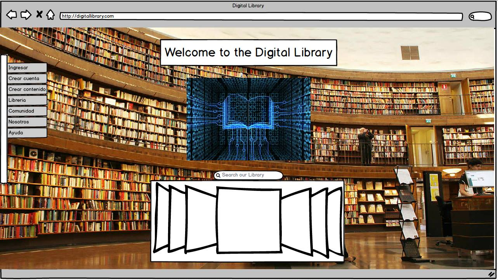
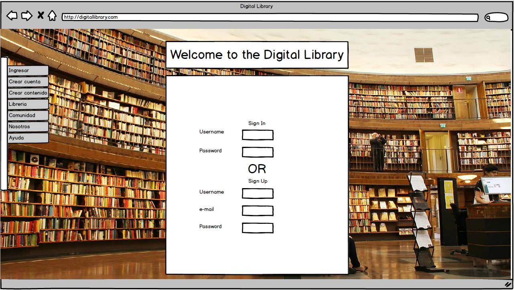
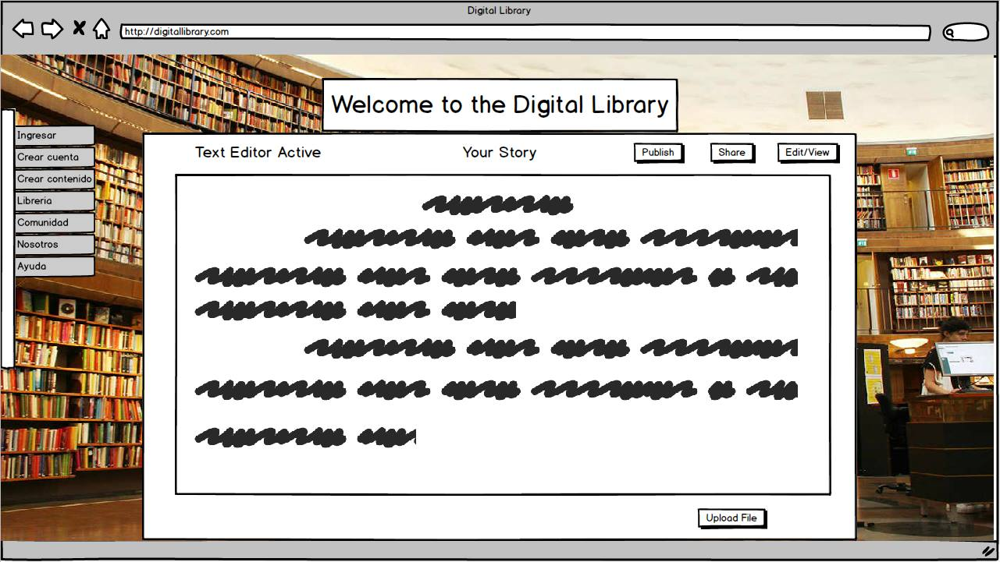
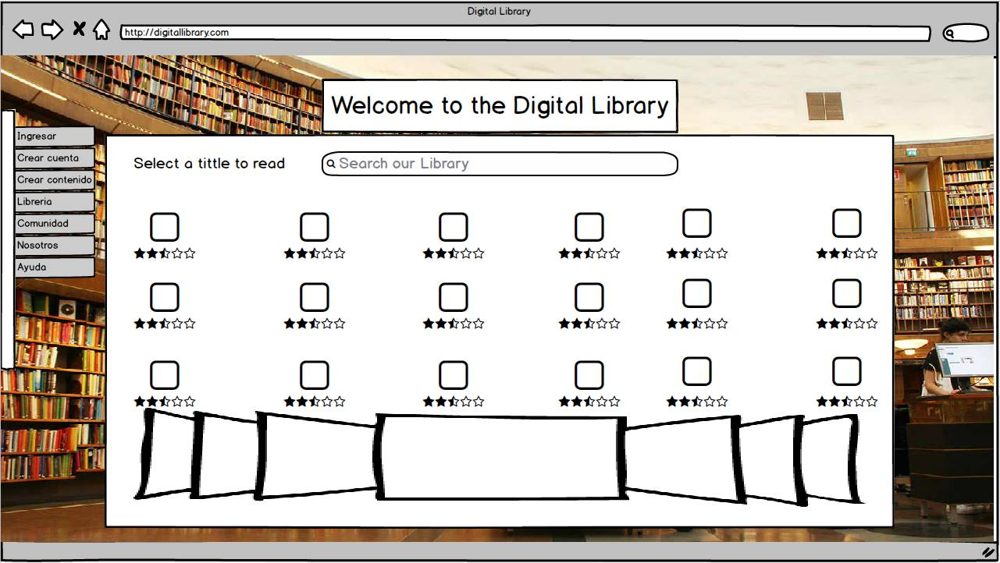
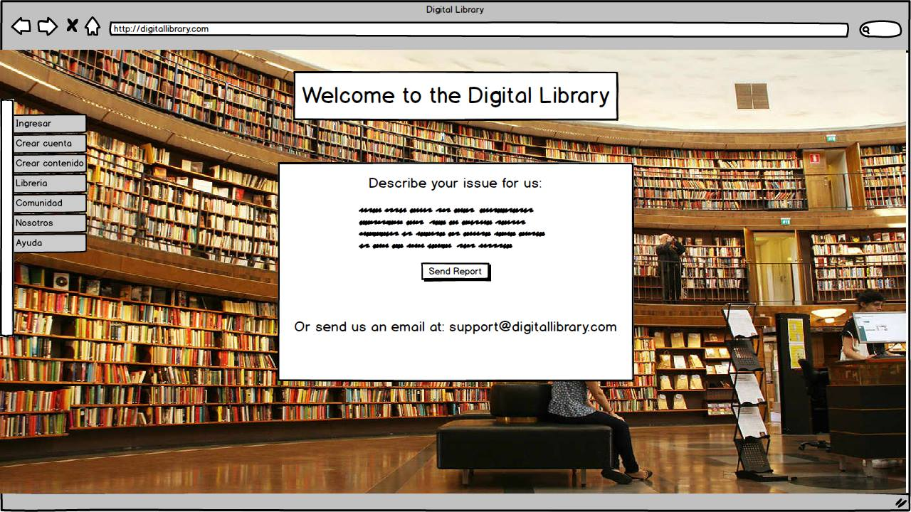
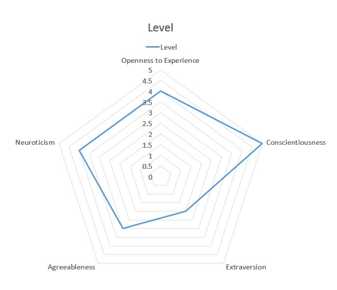
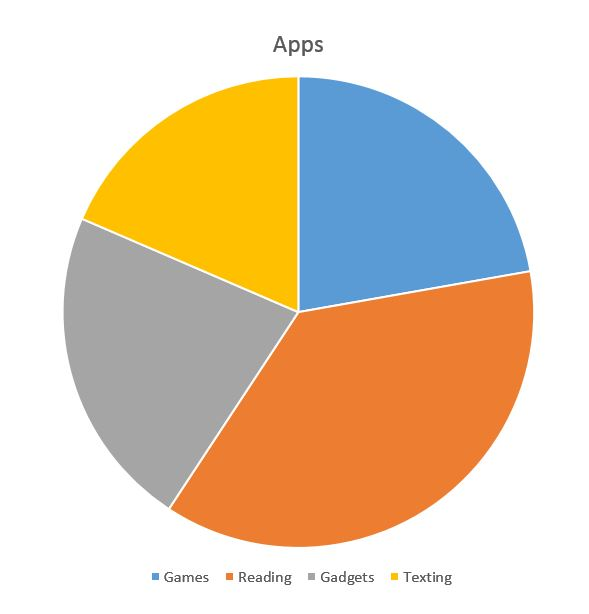
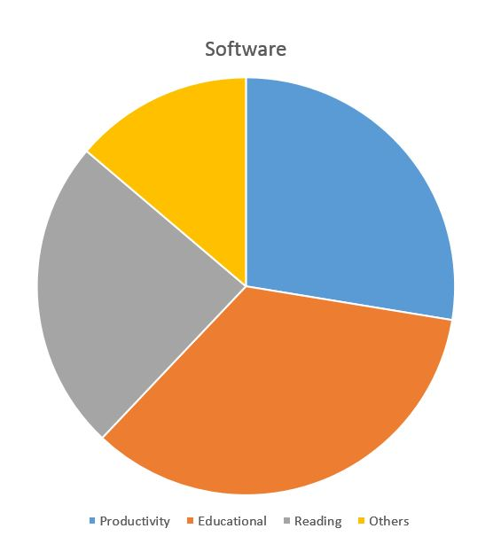
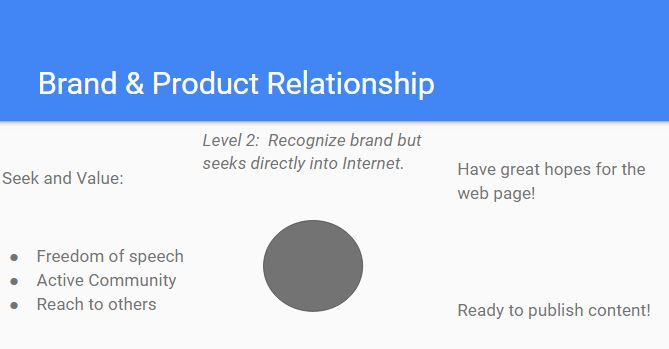
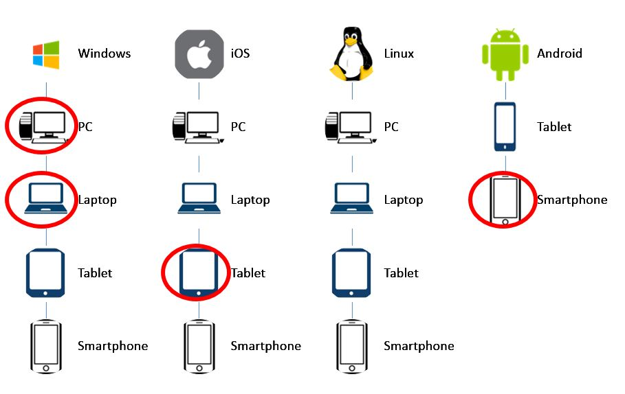

Sign In
Digital Library
Juan Antonio Olvera Robles
Raul Flores Miramontes
Acerca de esta página
En esta sección encontrarás información acerca de como se planeó esta página, encontrarás mokups, asi como las ideas de los conceptos claves de la página, y el perfil de nuestros usuarios, paso a paso vivirás la planeación que se realizó, así que espera ver bocetos iniciales que quizás estén muy alejados de lo que es hoy la página.
Objetivo Estratégico.
El objetivo estratégico es proporcionar un espacio en el cual la gente pueda encontrar material de lectura gratuito y también tener un lugar en el cual subir material creado por ellos. Todo esto con el fin de fomentar la lectura.
Tareas
Página de inicio para dirigirse al resto de la página web.
Página de creación de cuenta/inicio de sesión.
Página de creación de contenido
Página de búsqueda de contenido/browse library
Página de soporte.
Pasos
- 1.- Seleccione la sección de la página a la que desea acceder. 
- 2.-Creación de cuenta: Seleccionar nombre de usuario, correo, contraseña. Presionar "crear". Inicio de sesión: Ingresar usuario, contraseña y presionar "ingresar". 
- 3.- Seleccionar "nuevo". Acceder al editor de texto. Comenzar redacción. Seleccionar publicar. B- Seleccionar archivo de texto y subir y publicar. 
- 4.- Hacer click en la barra del buscador. Ingresar información a buscar. Presionar "buscar". Seleccionar y leer. 
- 5.- Seleccionar el tema en que busca ayuda o enviar un correo a soporte@example.com con la información de su problema. 
Costos
Primer metodología
"Methodology"
Customer Specifications:
We talked with our client and got together to define certain basic elements of the web page. We specified the amount of users, the size of the page, the kind of files to use, and the web page traffic. Before this, we asked the customer to specify and define by himself, without our influence, what he wanted from the website, the features, the functions, and other details. After that we gave him a feedback on what we thought could improve his ideas, what was possible to do, how complex or easy the features he asked for were, and an idea of the cost based on the features alone. This is how we got a common agreement and defined the website specifications.
Feasibility Study::
We explained our client the complexity of the features, functions, the time and effort they take to make, and all details of the internal development of the website. Based on this, our client defined the product's budget, and choose the best relation model between quality-cost-time for this project.
Prototype:
For the prototype we draw some quick sketches with the client, and simulated the website in the most simple and inexpensive ways. We received feedback from the customer, and quickly redefined the sketch as many times as needed. An example of the website sketch:

Testing:
We explained the client the importance that testing has on making good quality software. Explained how it is important to test thoroughly to avoid 1st day crashes, and website exploits due to untested codding. The customer understood its importance and agreed to make thorough testing.
Internal Methodology:
After talking with the client, and obtaining all the relevant information from his part, we started deciding the technical and engineering aspects of the project, such as development type, language to use, compilers, and the project planning for good code. We did not discuss this with the customer, since it is probably complex/unnecesary for them.
Regresar al inicioSobre Nosotros
Perfil
Los motivos por los cuales elegimos ser equipo es debido a que ya hemos participado de ese modo en otras clase y semestres, entre las materias a mencionar, participamos juntos en la realización de un proyecto extra en la materia de Organización Computacional, proyecto que debía ser funcional y debía convencer a los jueces de su utilidad. En dicho proyecto jamás tuvimos una ruptura como equipo a pesar de la dificultades que encontrábamos conforme avanzabamos, así que ya sabemos que trabajamos bien juntos y bueno, para que reparar una taza si no está rota.
Problema
Falta de interés en la lectura y del material para ella
Vamos a diseñar una página en la cual las personas puedan encontrar diferentes tipos de materiales de lectura, la cual también ofrece un cuestionario que podría ayudarle a encontrar el tipo de lectura de su interés, en dicha página, las personas podrán encotrar desde libros y editoriales, hasta audios, novelas, y otros contenidos creados por la comunidad.
Tener un espacio en el cual publicar textos propios
Otra problemática a enfrentar, es la de la falta de un lugar en el que una persona ávida a la escritura independiente, pueda hacer sus propias sus obras y publicarlas en un lugar donde otras personas puedan leerlo y opinan acerca de ellas.
Audiencia
Todas las personas que les guste la lectura o no, pero tengan interés en esta, además de aquellas que les gusta escribir y quieren que otras personas lean lo que escriben.
Entrevista
Regresar al inicio
Persona
"Creative"
"Whatever is done for love always occurs beyond good and evil." - Friedrich Nietzsche
Profile
- Name: John Smith
- Age: 22
- Gender: Male
- Income: $0.00 / Parents
- Occupation: Student
- Education: College (Studying)
Technology Expertise

User Experience Goals
- Freedom of speech
- Active Community
- Critical Criticism/Feedback
Do's
- Nice looking User Interface
- Ease of access
- Secure Accounts
Dont's
- Restricted access
- Complicated to use
- Bad community
Personality
Referents and Influences
- Interests: Technology, Literature
- Activities: Reading, Watching movies, Writing
- Recommendations from: Friends and family
- Devices: Laptop, PC, smartphone, tablet
Apps
Software
Brand & Product Relationship
Devices
Como evaluamos
Evaluation
Juan Antonio Olvera Robles
Raul Flores
Tarea: Crear una cuenta
Tipo de evaluación: Click
Instrucciones: Preisona donde pondrías tu información
Número de clicks: 4
Tarea: Subir Contenido
Tipo de evaluación: Navigation Flow
Instrucciones: Presiona donde creas que es necesario para subir un archivo
Resultado: Exitoso
Tarea: Buscar contenido Tipo de evaluación: Click Instrucciones: Encuentra un libro usando el buscador
Número de clicks: 2
Volver al Inicio